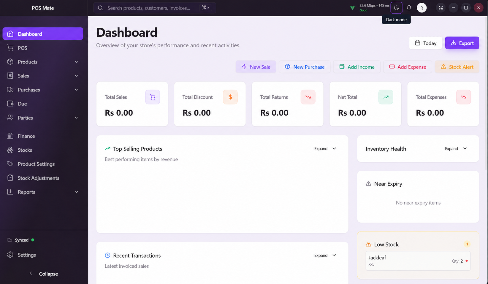

POSMATE / 01

POSMate dashboard screenshot
Add the supplied image as
Mobile screens ↗Concept UIAdd the supplied image as
assets/posmate-dashboard.pngPOSMate
A calm, fast workspace for retail teams to manage sales, stock and daily operations.
LaravelReactMySQL